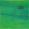
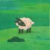
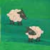
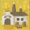
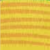
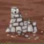
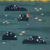
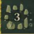
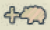

Tipperary
Board Game Arena 官方规则文档
Objective
Build the most prosperous Irish county by strategically placing landscape tiles. Players earn points through territory expansion, resource management, and various bonuses. The player with the highest score after 12 rounds wins.
Gameplay
You start with a small, misshapen hometown. The game ends after 12 turns (10 turns in a 5+ player game).
On each turn, the wheel will spin. The wheel is divided into sections, each with a player's coat-of-arms. When the wheel spins, each player receives the two landscape tiles where their coat-of-arms landed.
Simultaneously, each player chooses one of their two landscape tiles to place in their hometown. The landscape tiles have various symbols, each with different scoring effects.
Placement Rules
A tile must be placed adjacent to the hometown starting tile or a previously placed tile. You may expand in any direction with no limit. Tiles cannot overlap and cannot be placed corner-to-corner. Gaps are okay. Once placed and confirmed, the landscape tiles in your display cannot be rearranged.
Landscape Tiles
| Name | Symbol | Definition |
|---|---|---|
| Meadow |  |
|
| Pasture |   |
You score points equal to the number of sheep in your largest continuous flock. The player with the largest flock of all earns five bonus points. |
| Distillery |  |
Each grain field next to a distillery produces 1 whiskey. This advances the barrel on your whiskey track (on your hometown tile) one step. Some spaces on this track also grant a sheep token. |
| Grain Field |  |
The whiskey track barrel advances one for each grain field adjacent to a distillery. This means a single distillery can potentially move the whiskey track by four steps. |
| Ruin |  |
At the end of the game, you will receive a 1x1 Tower tile for each row of three ruins tiles. These tiles must be in a straight row, but one can be used as the corner for two sets of three, one going horizontal and one going vertical. |
| Bog |  |
Placing two bogs adjacent to each other grants a random 1x1 bonus tile. This tile can be any landscape type (meadow, stone circle, etc.) and must be placed immediately. Adding additional bogs has no effect. |
| Stone Circle |  |
Each stone circle has a scoring value of 1-4 points. |
Some tiles also show a "+Sheep" symbol.

After placing this landscape tile, you must immediately place a sheep token in an empty meadow. Sheep tokens can help connect pastures and increase the size of your flock. You can also get wooden sheep from producing whiskey. If you have no empty meadow, you lose the sheep.End of Turn
The player with the most sheep is awarded the "Largest Flock" token, which is worth 5 points at the end of the game.
Scoring
After the final round, players place any towers to fill any gaps. This can help increase your largest rectangle without gaps.
| Area | One point for each space in the largest continuous (gapless) rectangle in your county. |
| Sheep | One point per sheep in your largest continuous flock. The player with the overall largest flock receives a +5 point bonus. |
| Exploration | Five points if your starting hometown tile is completely bordered by other tiles. (Corners do count here.) |
| Whiskey | Points according to your barrel's position on the whiskey track. |
| Stone Circles | Points according to each stone circle's value |
The player with the highest total score wins!